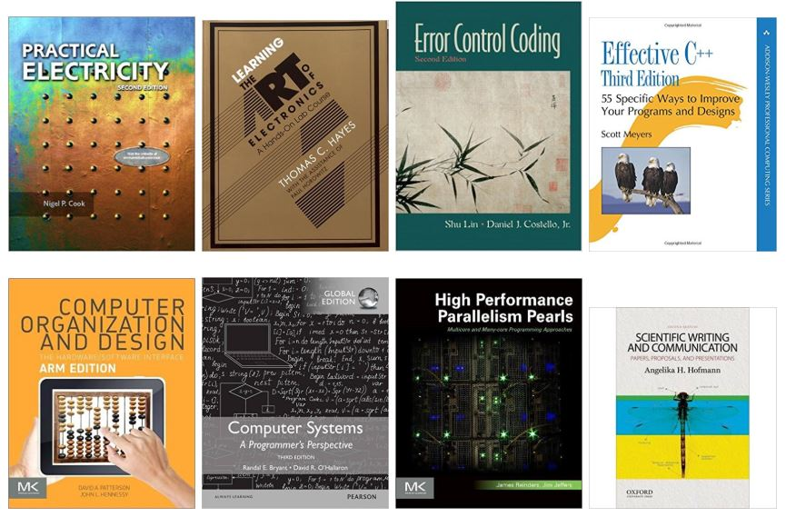

Recommended Courses to Study
Requirements before Joining our Team
|  | Prospective candidates as graduate student have to study the following topics and get high score in the related courses. The recommended books are listed in the left figures. Because our lap focues on the research related in the hybrid scope tightly coupled with hardware and software, prospective students to be our members have to study software-driven hardware and the interfaces between software and hardware. Our teams implements all circuits and VLSI chip in custom level and embedded firmware in C code. |
C Programming: struct, union, malloc, strcmp, sprintf, bit manipulation, pointer, array, extern, static, global
Using Linux : git, svn, ssh, rsync, iptables, csh, bash, sed, awk, perl, gnuplot
Engineering Mathmatics: differentiation, integration, differential equation, laplace transform, z-transform, transfer function, bode plot, fourier transform
Electrical Circuit: R,L,C analysis, BJT, operating point, impedance matching, load current, output impedance, input impedance, frequency response, op-amp, filter design, R-C charge/discharge, current limit, R-L current phase delay, load current, driver strength, VIH/L, VOL/H, level shifter
Operating Systems: process management, thread programming, virtual memory, device driver
Algorithm: greedy algorithm, dynamic programming, minimum spanning tree, support vector machine
Computer Architecture: ISA, pipelining, cache, multi cores, parallel processing
Data structure: abstract data type, function pointer, dynamic memory allocation, linear linked list(Stack, Queue, List), non-linear list(Tree, BST, AVL Tree). Graph, Heap, Sorting, Search, dynamic/static linking,
Microprocessors: ISA, CPU-RAM-MEM, bbus, Load/Store/Move, Ahmdal's law, Calling Convention, Stack Frame, Branch, Interrupt/Polling, MCU programming
Digital Logic Design: Verilog, Combinational Logic, Sequential Logic, Finite State Machine, Decoder, Encoder NAND/NOR Gate, F/F Latch, Synchronous Design, Setup/Hold Violation, Static/Dynamic Current, Drive Strength, Input Capacitance, Loading Effect, Drive Strength
Control Engineering: differential equation, laplace transform, transfer function, State Space Equation, feedback control, stability, PID control, transient response, frequency response, steady state response, loot locus, Bode Plot
Digital Signal Processing: Sampling, DFT, FIR/IIR Filter, Z-Transform, FFT
Training Courses (1 ~ 2 years) for Prospective Candidates
We choose some prospective candidates to be members in our team, then train them about the following technical topics. Graduate students will assist them to upgrade their technical skill, so that they can achieve successful results in our lab. During the training courses, we evaluate their capability and attitude to be our members, one candidate may be selected as our member. Our policy is only to select one per year.
Shell Script Programming (bash, csh, python, tcl, awk, sed)
Advanced Linux Administration
Hardware-Aware C Programming for Embedded Systems
Building Optimized C Program in Extremely Limited Hardware Environment
Accelerating Software/Hardware by Understanding In-depth Architecture
Full-Custom Circuit Schematic/PCB layout Design
Integrated Understanding of Transistor-Circuit-System-Software Vertical Stack
Revisiting/Linking Electronics Internals with Mathematics
Advanced MATLAB/Simulink Utilization
Advanced Utilization of Functional Simulator, Verilog Simulator, SPICE Simulator
Programming Document using LaTeX and Markdown
Crafting Custom Parser/Generator for Transformation Automation using Compiler Theory
Expert-Level MCU Programming
Low-Power Software/Hardware Design and Implementation
In-Depth Understanding of Digital Signal Processing for Designing Highly-Optimized Data Processing Unit.
Discrete Event-Driven Simulation Model and Simulator Implementation for Evaluating Dynamics of Large-Scaled Applications
Full Custom Design and Implementation of Tiny Microprocessors
Cloud-Connected Software Design and Implementation
Full-Custom Implementation for MIPS/ARM/RISC-V Microprocessor using FPGA
System-on-Chip Design and Implementation for Application-Specific Processing
Cloud-Connected FPGA-based System Design and Implementation
Highly Efficient Bio-Signal Processing Processor and Software Kernel Design for Embedded Systems
Low-Power Flash Memory Access and Fast Reprogramming Acceleration for Secure Firmware Update
Attacking Embedded System using Side-Channel Analysis
Protecting Embedded System from Side-Channel Analysis Attack